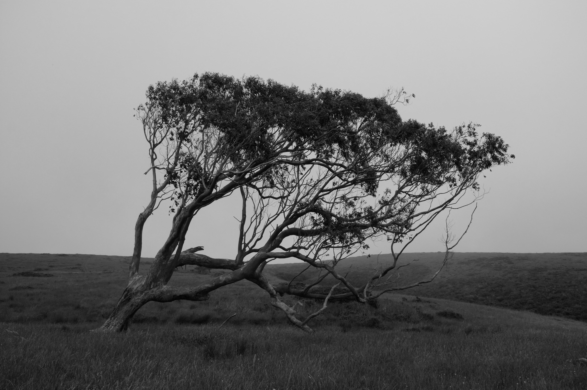

Jaime
Tjahaja
Music sewn from the fabric of the American sonic landscape, through the third-culture lens of a contemporary bluesman.
Listen
Music sewn from the fabric of the American sonic landscape, through the third-culture lens of a contemporary bluesman.
Listen
Written during an arts residency in Ubud, Bali, following the unexpected loss of a close friend. Accompanied by a music video by Bay Area filmmaker Edgar Lara.
Exclusive release →


There is a eucalyptus tree on the Estero Trail in Inverness, California — wind-bent, salt-weathered, rooted at the edge of where the estuary opens into the sea. Jaime Tjahaja keeps coming back to it. It shows up in his artwork, in his thinking, in the particular way his songs hold their ground against the weather.
Born in Indonesia, raised in California, Jaime has spent a lifetime navigating the distance between where you're from and where you belong. That distance is the engine of his music — songs sewn from the deep fabric of American roots, blues, folk, and the confessional singer-songwriter tradition of the 1970s, rendered in a voice that is unmistakably his own. Paul Simon's heartbeat prose set to heartland rhythms. Jackson Browne's direct conduit into the core of a shared experience. The mercurial imagery of Dylan in his mid-sixties beat blues. Something harder to place, but undeniably in the room.
His latest single "Indeed I Do" arrived the way the best songs do — unbidden, in a rented room in Bali, in the hours after receiving news no one is ready for. It poured out whole. That it sounds like it always existed is not an accident. It's just how Tjahaja works: slowly, honestly, and with the patience of someone who has learned to trust the ground beneath his feet.
Get in touch
For bookings, press inquiries, and collaboration.
jaimetjahaja.music@gmail.com